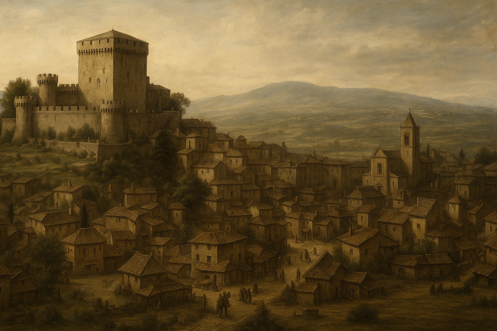

Storia del Castello
Costruito nel 1038, il Castello di Sarteano ha vissuto secoli di storia tra assedi, famiglie nobiliari e restauri. Un luogo in cui ogni pietra racconta un'epoca
...continua qui


La Lupa sulle Mura
Appena varcata la soglia del Castello di Sarteano, lo sguardo si posa su un’antica figura scolpita nella pietra:
una lupa che allatta due gemelli. È più di un simbolo: è il legame con una leggenda millenaria.
Secondo la tradizione, Senio e Ascanio, figli di Remo, fuggirono da Roma portando con sé la sacra immagine della lupa capitolina.
Giunsero tra queste colline, dove fondarono la città di Siena e diffusero il mito della loro origine.
Quando la Repubblica di Siena prese possesso del castello, volle lasciare un segno indelebile: scolpì la lupa sulle mura,
a protezione del luogo e della sua gente.
Ancora oggi, nelle notti silenziose, si racconta che la pietra si scaldi leggermente sotto la luna piena,
come se quella lupa vegliasse ancora su Sarteano e sui suoi segreti.
Informazioni per la Visita
Orari di apertura: dal 12 Aprile al 30 settembre
- Lunedì: Chiuso
- Martedì: Mattina: 10:30-13:00 / Pomeriggio: 15:00-19:00
- Mercoledì: Mattina: 10:30-13:00 / Pomeriggio: 15:00-19:00
- Giovedì: Mattina: 10:30-13:00 / Pomeriggio: 15:00-19:00
- Venerdì: Mattina: 10:30-13:00 / Pomeriggio: 15:00-19:00
- Sabato: Mattina: 10:30-13:00 / Pomeriggio: 15:00-19:00
- Domenica: Mattina: 10:30-13:00 / Pomeriggio: 15:00-19:00
- Ottobre: aperto venerdì, sabato, domenica e festivi dalle 10:30 alle 13:00 e dalle 15:00 alle 18:00
- Novembre: aperto sabato, domenica e festivi dalle 10:30 alle 13:00 e dalle 15:00 alle 17:00
- Dal 1° al 7 dicembre: aperto solo festivi e prefestivi dalle 10:30 alle 13:00 e dalle 15:00 alle 17:00
- Dall’8 dicembre al 6 gennaio: aperto da martedì a domenica (chiuso la mattina del 24 dicembre
e del 1° gennaio) dalle 10:00 alle 12:30 e dalle 15:30 alle 18:30
Tariffe per biglietti:
- Biglietto intero: €4,00
- Biglietto ridotto: €3,00
- Scolaresche: €2,00
Tariffe biglietti cumulativi:
- Castello + Museo Archeologico: €6,00
- Castello + Museo Archeologico + Sala d’Arte Domenico Beccafumi: €8,00
- Castello + Museo Archeologico + Sala d’Arte + Tomba della Quadriga Infernale: €12,00
Come Raggiungere il Castello
üöó In auto: Sarteano √® facilmente raggiungibile tramite l'autostrada A1. Esci al casello Chiusi‚ÄìChianciano Terme e segui le indicazioni per Sarteano lungo la SP478 per circa 10 km. Una volta arrivato in paese, puoi parcheggiare nei pressi del centro storico e raggiungere il castello a piedi in pochi minuti.
üöÜ In treno: La stazione ferroviaria pi√π vicina √® Chiusi-Chianciano Terme, ben collegata da treni provenienti da Roma, Firenze, Siena e Perugia. Dalla stazione, Sarteano dista circa 10 km: puoi proseguire in taxi oppure utilizzare la linea di autobus FT5 che ferma in Piazza della Libert√† e Via Trieste.
üöå In autobus: Diverse linee regionali collegano Sarteano con i comuni vicini. Le principali sono:
- FT5: collega Chiusi, Cetona, Sarteano, Chianciano, Montepulciano
- FT9: collega Chiusi, Sarteano, Radicofani, Abbadia San Salvatore
- T10: collega Ponte al Rigo, Celle, Cetona, Chiusi
La fermata centrale è Piazza Bargagli, a pochi minuti dal castello.
✈️ In aereo: Gli aeroporti più vicini a Sarteano sono:
- Firenze Peretola (FLR): circa 135 km
- Roma Fiumicino (FCO): circa 185 km
- Pisa Galileo Galilei (PSA): circa 180 km
Da ogni aeroporto puoi noleggiare un'auto o combinare treno e autobus fino a Sarteano.